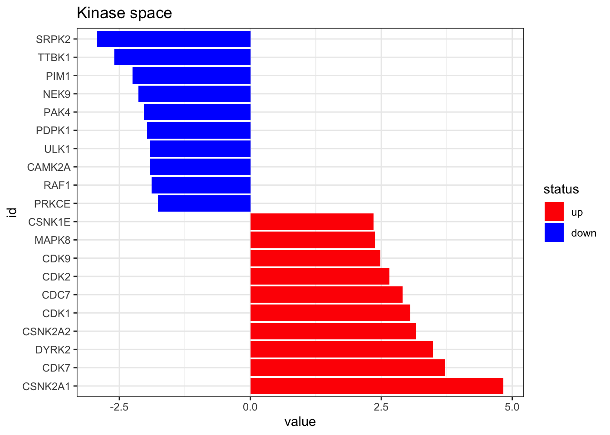
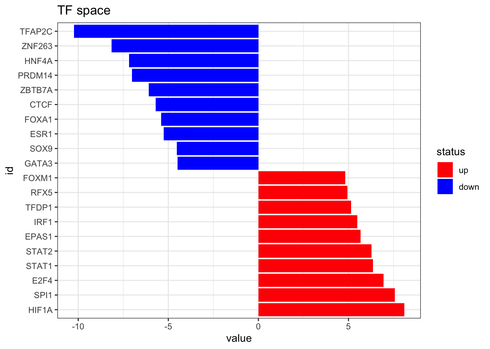

Transcription factor and kinase activity analysis
Last updated: 2021-11-10
Checks: 7 0
Knit directory: kinase_tf_mini_tuto/
This reproducible R Markdown analysis was created with workflowr (version 1.6.2). The Checks tab describes the reproducibility checks that were applied when the results were created. The Past versions tab lists the development history.
Great! Since the R Markdown file has been committed to the Git repository, you know the exact version of the code that produced these results.
Great job! The global environment was empty. Objects defined in the global environment can affect the analysis in your R Markdown file in unknown ways. For reproduciblity it’s best to always run the code in an empty environment.
The command set.seed(20210608) was run prior to running the code in the R Markdown file. Setting a seed ensures that any results that rely on randomness, e.g. subsampling or permutations, are reproducible.
Great job! Recording the operating system, R version, and package versions is critical for reproducibility.
Nice! There were no cached chunks for this analysis, so you can be confident that you successfully produced the results during this run.
Great job! Using relative paths to the files within your workflowr project makes it easier to run your code on other machines.
Great! You are using Git for version control. Tracking code development and connecting the code version to the results is critical for reproducibility.
The results in this page were generated with repository version c6e4082. See the Past versions tab to see a history of the changes made to the R Markdown and HTML files.
Note that you need to be careful to ensure that all relevant files for the analysis have been committed to Git prior to generating the results (you can use wflow_publish or wflow_git_commit). workflowr only checks the R Markdown file, but you know if there are other scripts or data files that it depends on. Below is the status of the Git repository when the results were generated:
Ignored files:
Ignored: .Rproj.user/
Ignored: analysis/figure/
Ignored: omnipathr-log/
Ignored: renv/library/
Ignored: renv/staging/
Note that any generated files, e.g. HTML, png, CSS, etc., are not included in this status report because it is ok for generated content to have uncommitted changes.
These are the previous versions of the repository in which changes were made to the R Markdown (analysis/index.Rmd) and HTML (docs/index.html) files. If you’ve configured a remote Git repository (see ?wflow_git_remote), click on the hyperlinks in the table below to view the files as they were in that past version.
| File | Version | Author | Date | Message |
|---|---|---|---|---|
| Rmd | 1a77cf4 | Martin Garrido Rodriguez-Cordoba | 2021-11-10 | wflow_publish("analysis/*.Rmd") |
| html | abb51f4 | adugourd | 2021-07-21 | Build site. |
| Rmd | b364b6c | adugourd | 2021-07-21 | wflow_publish("analysis/*.Rmd") |
| html | 87802fa | Martin Garrido Rodriguez-Cordoba | 2021-06-11 | Build site. |
| Rmd | 5cd61ca | Martin Garrido Rodriguez-Cordoba | 2021-06-11 | wflow_publish(“analysis/index.Rmd”) |
| Rmd | bf1d18a | adugourd | 2021-06-11 | updated package |
| Rmd | 2cf552b | adugourd | 2021-06-11 | modified to decoupleR |
| html | 8e3f301 | Martin Garrido Rodriguez-Cordoba | 2021-06-09 | Build site. |
| Rmd | edae741 | Martin Garrido Rodriguez-Cordoba | 2021-06-09 | wflow_publish("analysis/*.Rmd") |
| Rmd | 81eb4b2 | Martin Garrido Rodriguez-Cordoba | 2021-06-09 | Start workflowr project. |
About
This is a short tutorial to show how to estimate transcription factor and kinase activities from transcriptomic and phosphoproteomic data, respectively. First, we load the packages and functions that we will use during the analysis
library(tidyverse)
library(here)
library(OmnipathR)
library(dorothea)
library(decoupleR)
library(workflowr)
library(rmarkdown)
library(org.Hs.eg.db)
source(here("code/utils.R"))Kinase activity estimation
Then, we load the results of the phosphoproteomic differential analysis (carried out previously) and format it properly. In addition, here we represent the top 10 up and down regulated phosphosites.
phospho_differential_analysis <- read_csv(here("data/phospho_differential_analysis.csv")) %>%
tibble::column_to_rownames("psite_ID")Rows: 14243 Columns: 2── Column specification ────────────────────────────────────────────────────────
Delimiter: ","
chr (1): psite_ID
dbl (1): t_value_tumor_vs_healthy
ℹ Use `spec()` to retrieve the full column specification for this data.
ℹ Specify the column types or set `show_col_types = FALSE` to quiet this message.plot_top_features(phospho_differential_analysis, n_top = 10) +
ggtitle('Phosphosite space')
| Version | Author | Date |
|---|---|---|
| 8e3f301 | Martin Garrido Rodriguez-Cordoba | 2021-06-09 |
Next, we can load the prior knowledge interactions, composed by kinase-target relationships
omnipath_ptm <- OmnipathR::get_signed_ptms() %>%
dplyr::filter(modification %in% c("dephosphorylation","phosphorylation")) %>%
dplyr::mutate(p_site = paste0(substrate_genesymbol, "_", residue_type, residue_offset),
mor = ifelse(modification == "phosphorylation", 1, -1)) %>%
dplyr::transmute(p_site, enzyme_genesymbol, mor) %>%
as.data.frame()
omnipath_ptm$likelihood <- 1
#we remove ambiguous modes of regulations
omnipath_ptm$id <- paste(omnipath_ptm$p_site,omnipath_ptm$enzyme_genesymbol,sep ="")
omnipath_ptm <- omnipath_ptm[!duplicated(omnipath_ptm$id),]
omnipath_ptm <- omnipath_ptm[,-5]On a final step, we run viper to get the Kinase activities from the phosphoproteomic data. You can also run that on wour normalised intesity matrix of phosphosites directly, as long as it is formatted as a dataframe of similar format as here. User is strongly encouraged to check https://github.com/saezlab/decoupleR for more info on the algorithm here employed.
#rename KSN to fit decoupler format
names(omnipath_ptm)[c(1,2)] <- c("target","tf")
kin_activity <- run_wmean(
mat = as.matrix(phospho_differential_analysis),
network = omnipath_ptm,
.source = "tf",
times = 1000
)
kin_activity <- kin_activity[kin_activity$statistic == "norm_wmean",c(2,4)] %>%
tibble::column_to_rownames(var = "source")plot_top_features(kin_activity, n_top = 10) +
ggtitle('Kinase space')
Transcription factor activity
First we import the dorothea regulons (using only confidence A, B, and C), see dorothea publication for information on confidence levels.
dorothea_df <- dorothea_hs %>%
dplyr::filter(confidence %in% c("A", "B", "C")) %>%
dplyr::select(target, tf, mor) %>%
as.data.frame()
dorothea_df$likelihood <- 1Now we import the RNAseq data. It has entrez gene identifiers, but we need it to have gene symbols to match dorothea database, so we have to do some id conversion as well. Here we can also take a look to the top altered features.
RNA_differential_analysis <- read_csv(here("data/RNA_differential_analysis.csv")) %>%
tibble::column_to_rownames("ID") %>%
dplyr::select(t) %>%
as.matrix() %>%
translateMatrixWithDb(mat = ., db = org.Hs.eg.db,
sourceKey = "ENTREZID", targetKey = "SYMBOL")Rows: 15919 Columns: 7── Column specification ────────────────────────────────────────────────────────
Delimiter: ","
dbl (7): ID, logFC, AveExpr, t, P.Value, adj.P.Val, B
ℹ Use `spec()` to retrieve the full column specification for this data.
ℹ Specify the column types or set `show_col_types = FALSE` to quiet this message.'select()' returned 1:1 mapping between keys and columns------------------------------------------------No input summarise function detected, using first match on multi-mapping situations.------------------------------------------------
153 of 15919 input ids on the translator data frame could not be mapped.
0 of 15919 input ids on the translator data frame were mapped to 2 or more target ids.
0 of 15766 target ids on the translator data frame were mapped to 2 or more input ids.
------------------------------------------------
Input keys were finally mapped to 15766 target ids.
------------------------------------------------plot_top_features(RNA_differential_analysis, n_top = 10) +
ggtitle('Transcriptomic space')
Now we estimate the TF activities using run_mean from decoupleR and visualize the top 10 altered TFs
TF_activities <- as.data.frame(run_wmean(mat = as.matrix(RNA_differential_analysis),
network = dorothea_df, .source = "tf",
times = 1000))
TF_activities <- TF_activities %>%
dplyr::filter(statistic == "norm_wmean") %>%
dplyr::select(source, score) %>%
tibble::column_to_rownames(var = "source")plot_top_features(TF_activities, n_top = 10) +
ggtitle('TF space')
Next steps
Now you have succefully estimated kinase and TF activities from phosphoproteomic and transcriptomic. You can now combine them together and use them as input for COSMOS. You may also leave them separated and use them a separated input and measurments in cosmos, if you lack metabolomic data
See https://github.com/saezlab/cosmosR for more info on how to use cosmos
sessionInfo()R version 4.1.1 (2021-08-10)
Platform: x86_64-apple-darwin17.0 (64-bit)
Running under: macOS Big Sur 10.16
Matrix products: default
BLAS: /Library/Frameworks/R.framework/Versions/4.1/Resources/lib/libRblas.0.dylib
LAPACK: /Library/Frameworks/R.framework/Versions/4.1/Resources/lib/libRlapack.dylib
locale:
[1] en_US.UTF-8/en_US.UTF-8/en_US.UTF-8/C/en_US.UTF-8/en_US.UTF-8
attached base packages:
[1] parallel stats4 stats graphics grDevices datasets utils
[8] methods base
other attached packages:
[1] org.Hs.eg.db_3.14.0 AnnotationDbi_1.56.1 IRanges_2.26.0
[4] S4Vectors_0.30.2 Biobase_2.52.0 BiocGenerics_0.38.0
[7] rmarkdown_2.11 decoupleR_2.1.0 dorothea_1.6.0
[10] OmnipathR_3.2.0 here_1.0.1 forcats_0.5.1
[13] stringr_1.4.0 dplyr_1.0.7 purrr_0.3.4
[16] readr_2.0.2 tidyr_1.1.4 tibble_3.1.6
[19] ggplot2_3.3.5 tidyverse_1.3.1 workflowr_1.6.2
loaded via a namespace (and not attached):
[1] colorspace_2.0-2 ellipsis_0.3.2
[3] rprojroot_2.0.2 XVector_0.32.0
[5] GenomicRanges_1.44.0 fs_1.5.0
[7] rstudioapi_0.13 farver_2.1.0
[9] bit64_4.0.5 fansi_0.5.0
[11] lubridate_1.8.0 ranger_0.13.1
[13] xml2_1.3.2 RobustRankAggreg_1.1
[15] cachem_1.0.6 knitr_1.36
[17] jsonlite_1.7.2 speedglm_0.3-3
[19] bcellViper_1.30.0 broom_0.7.10
[21] dbplyr_2.1.1 png_0.1-7
[23] compiler_4.1.1 httr_1.4.2
[25] backports_1.3.0 assertthat_0.2.1
[27] Matrix_1.3-4 fastmap_1.1.0
[29] cli_3.1.0 later_1.3.0
[31] htmltools_0.5.2 prettyunits_1.1.1
[33] tools_4.1.1 igraph_1.2.8
[35] gtable_0.3.0 glue_1.5.0
[37] GenomeInfoDbData_1.2.6 rappdirs_0.3.3
[39] Rcpp_1.0.7 cellranger_1.1.0
[41] jquerylib_0.1.4 Biostrings_2.60.2
[43] vctrs_0.3.8 xfun_0.28
[45] rvest_1.0.2 lifecycle_1.0.1
[47] renv_0.13.2 zlibbioc_1.38.0
[49] MASS_7.3-54 scales_1.1.1
[51] vroom_1.5.5 hms_1.1.1
[53] promises_1.2.0.1 MatrixGenerics_1.4.3
[55] SummarizedExperiment_1.22.0 yaml_2.2.1
[57] curl_4.3.2 memoise_2.0.0
[59] sass_0.4.0 rpart_4.1-15
[61] stringi_1.7.5 RSQLite_2.2.8
[63] highr_0.9 checkmate_2.0.0
[65] GenomeInfoDb_1.28.4 rlang_0.4.12
[67] pkgconfig_2.0.3 matrixStats_0.61.0
[69] bitops_1.0-7 evaluate_0.14
[71] lattice_0.20-45 labeling_0.4.2
[73] bit_4.0.4 tidyselect_1.1.1
[75] logger_0.2.2 magrittr_2.0.1
[77] R6_2.5.1 generics_0.1.1
[79] DelayedArray_0.18.0 DBI_1.1.1
[81] pillar_1.6.4 haven_2.4.3
[83] whisker_0.4 withr_2.4.2
[85] KEGGREST_1.32.0 RCurl_1.98-1.5
[87] modelr_0.1.8 crayon_1.4.2
[89] utf8_1.2.2 tzdb_0.2.0
[91] progress_1.2.2 grid_4.1.1
[93] readxl_1.3.1 blob_1.2.2
[95] git2r_0.28.0 reprex_2.0.1
[97] digest_0.6.28 httpuv_1.6.3
[99] munsell_0.5.0 bslib_0.3.1